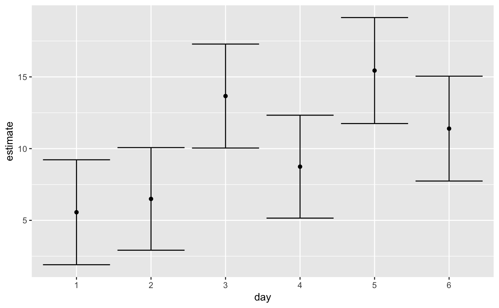

Tidy summarizes information about the components of a model. A model component might be a single term in a regression, a single hypothesis, a cluster, or a class. Exactly what tidy considers to be a model component varies cross models but is usually self-evident. If a model has several distinct types of components, you will need to specify which components to return.
# S3 method for emmGrid tidy(x, ...)
Arguments
| x | An |
|---|---|
| ... | Additional arguments passed to |
Details
Returns a data frame with one observation for each estimated mean, and one column for each combination of factors. When the input is a contrast, each row will contain one estimated contrast.
There are a large number of arguments that can be
passed on to emmeans::summary.emmGrid() or lsmeans::summary.ref.grid().
See also
tidy(), emmeans::ref_grid(), emmeans::emmeans(),
emmeans::contrast()
Other emmeans tidiers: tidy.lsmobj,
tidy.ref.grid
Value
A tibble::tibble() with columns:
The upper end of a confidence interval for the term under consideration. Included only if `conf.int = TRUE`.
The lower end of a confidence interval for the term under consideration. Included only if `conf.int = TRUE`.
Levels being compared.
Degrees of freedom used by this term in the model.
The two-sided p-value associated with the observed statistic.
The standard error of the regression term.
One level of the factor being contrasted
The other level of the factor being contrasted
T-ratio statistic
Estimated least-squares mean.
Examples
library(emmeans)#> #>#> #> #># linear model for sales of oranges per day oranges_lm1 <- lm(sales1 ~ price1 + price2 + day + store, data = oranges) # reference grid; see vignette("basics", package = "emmeans") oranges_rg1 <- ref_grid(oranges_lm1) td <- tidy(oranges_rg1) td#> # A tibble: 36 x 7 #> price1 price2 day store estimate std.error df #> * <dbl> <dbl> <fct> <fct> <dbl> <dbl> <dbl> #> 1 51.2 48.6 1 1 2.92 2.72 23 #> 2 51.2 48.6 2 1 3.85 2.70 23 #> 3 51.2 48.6 3 1 11.0 2.53 23 #> 4 51.2 48.6 4 1 6.10 2.65 23 #> 5 51.2 48.6 5 1 12.8 2.44 23 #> 6 51.2 48.6 6 1 8.75 2.79 23 #> 7 51.2 48.6 1 2 4.96 2.38 23 #> 8 51.2 48.6 2 2 5.89 2.34 23 #> 9 51.2 48.6 3 2 13.1 2.42 23 #> 10 51.2 48.6 4 2 8.14 2.35 23 #> # ... with 26 more rows#> # A tibble: 6 x 6 #> day estimate std.error df conf.low conf.high #> * <fct> <dbl> <dbl> <dbl> <dbl> <dbl> #> 1 1 5.56 1.77 23 1.91 9.22 #> 2 2 6.49 1.73 23 2.92 10.1 #> 3 3 13.7 1.75 23 10.0 17.3 #> 4 4 8.74 1.73 23 5.16 12.3 #> 5 5 15.4 1.79 23 11.7 19.1 #> 6 6 11.4 1.77 23 7.74 15.0#> # A tibble: 6 x 6 #> contrast estimate std.error df statistic p.value #> * <fct> <dbl> <dbl> <dbl> <dbl> <dbl> #> 1 1 effect -4.65 1.62 23 -2.87 0.0261 #> 2 2 effect -3.72 1.58 23 -2.36 0.0547 #> 3 3 effect 3.45 1.60 23 2.15 0.0637 #> 4 4 effect -1.47 1.59 23 -0.930 0.434 #> 5 5 effect 5.22 1.64 23 3.18 0.0249 #> 6 6 effect 1.18 1.62 23 0.726 0.475#> # A tibble: 15 x 7 #> level1 level2 estimate std.error df statistic p.value #> * <chr> <chr> <dbl> <dbl> <dbl> <dbl> <dbl> #> 1 1 2 -0.930 2.47 23 -0.377 0.999 #> 2 1 3 -8.10 2.47 23 -3.29 0.0337 #> 3 1 4 -3.18 2.51 23 -1.27 0.799 #> 4 1 5 -9.88 2.56 23 -3.86 0.00913 #> 5 1 6 -5.83 2.52 23 -2.31 0.229 #> 6 2 3 -7.17 2.48 23 -2.89 0.0777 #> 7 2 4 -2.25 2.44 23 -0.920 0.937 #> 8 2 5 -8.95 2.52 23 -3.56 0.0184 #> 9 2 6 -4.90 2.45 23 -2.00 0.371 #> 10 3 4 4.92 2.49 23 1.98 0.385 #> 11 3 5 -1.78 2.47 23 -0.719 0.978 #> 12 3 6 2.27 2.54 23 0.894 0.944 #> 13 4 5 -6.70 2.49 23 -2.69 0.115 #> 14 4 6 -2.65 2.45 23 -1.08 0.883 #> 15 5 6 4.05 2.56 23 1.58 0.617# plot confidence intervals library(ggplot2) ggplot(tidy(marginal), aes(day, estimate)) + geom_point() + geom_errorbar(aes(ymin = conf.low, ymax = conf.high))# by multiple prices by_price <- emmeans(oranges_lm1, "day", by = "price2", at = list(price1 = 50, price2 = c(40, 60, 80), day = c("2", "3", "4")) ) by_price#> price2 = 40: #> day emmean SE df lower.CL upper.CL #> 2 6.236227 1.887106 23 2.332452 10.14000 #> 3 13.405992 2.119376 23 9.021730 17.79025 #> 4 8.483710 1.866510 23 4.622540 12.34488 #> #> price2 = 60: #> day emmean SE df lower.CL upper.CL #> 2 9.213169 2.109448 23 4.849443 13.57689 #> 3 16.382933 1.905216 23 12.441693 20.32417 #> 4 11.460651 2.178054 23 6.955003 15.96630 #> #> price2 = 80: #> day emmean SE df lower.CL upper.CL #> 2 12.190110 3.646332 23 4.647097 19.73312 #> 3 19.359874 3.274953 23 12.585119 26.13463 #> 4 14.437592 3.736489 23 6.708076 22.16711 #> #> Results are averaged over the levels of: store #> Confidence level used: 0.95tidy(by_price)#> # A tibble: 9 x 7 #> day price2 estimate std.error df conf.low conf.high #> * <fct> <dbl> <dbl> <dbl> <dbl> <dbl> <dbl> #> 1 2 40 6.24 1.89 23 2.33 10.1 #> 2 3 40 13.4 2.12 23 9.02 17.8 #> 3 4 40 8.48 1.87 23 4.62 12.3 #> 4 2 60 9.21 2.11 23 4.85 13.6 #> 5 3 60 16.4 1.91 23 12.4 20.3 #> 6 4 60 11.5 2.18 23 6.96 16.0 #> 7 2 80 12.2 3.65 23 4.65 19.7 #> 8 3 80 19.4 3.27 23 12.6 26.1 #> 9 4 80 14.4 3.74 23 6.71 22.2ggplot(tidy(by_price), aes(price2, estimate, color = day)) + geom_line() + geom_errorbar(aes(ymin = conf.low, ymax = conf.high))